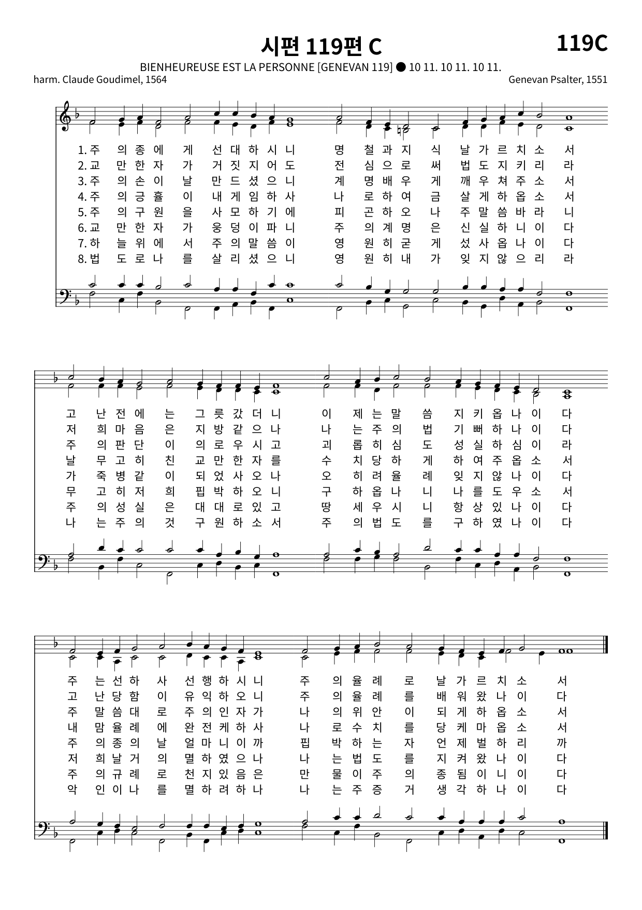

시편 119편 C
BIENHEUREUSE EST LA PERSONNE [GENEVAN 119] · 10 11. 10 11. 10 11.
곡조: Genevan Psalter, 1551 · 화성: Claude Goudimel, 1564 · 가사: 개역한글판 시편 119편 편역(AI 초벌 편역판 · 신학 감수 전) · 8절
시편 119편은 6곡으로 나누어 실었습니다: A B C D E F · 이 곡은 시편 119편 가사의 17~24번째 절입니다.
악보 PDF MusicXML(출력용) MusicXML(반주용, 전주·반복 포함) 개역한글 시편 119편 읽기
악보
← 시편 119편 B 목록반주 재생(준비 중)시편 119편 D →
가사
1절
주의 종에게 선대하시니
명철과 지식 날 가르치소서
고난 전에는 그릇 갔더니
이제는 말씀 지키옵나이다
주는 선하사 선 행하시니
주의 율례로 날 가르치소서
주의 종에게 선대하시니
명철과 지식 날 가르치소서
고난 전에는 그릇 갔더니
이제는 말씀 지키옵나이다
주는 선하사 선 행하시니
주의 율례로 날 가르치소서
2절
교만한 자가 거짓 지어도
전심으로써 법도 지키리라
저희 마음은 지방 같으나
나는 주의 법 기뻐하나이다
고난 당함이 유익하오니
주의 율례를 배워왔나이다
교만한 자가 거짓 지어도
전심으로써 법도 지키리라
저희 마음은 지방 같으나
나는 주의 법 기뻐하나이다
고난 당함이 유익하오니
주의 율례를 배워왔나이다
3절
주의 손이 날 만드셨으니
계명 배우게 깨우쳐 주소서
주의 판단이 의로우시고
괴롭히심도 성실하심이라
주 말씀대로 주의 인자가
나의 위안이 되게 하옵소서
주의 손이 날 만드셨으니
계명 배우게 깨우쳐 주소서
주의 판단이 의로우시고
괴롭히심도 성실하심이라
주 말씀대로 주의 인자가
나의 위안이 되게 하옵소서
4절
주의 긍휼이 내게 임하사
나로 하여금 살게 하옵소서
날 무고히 친 교만한 자를
수치 당하게 하여 주옵소서
내 맘 율례에 완전케 하사
나로 수치를 당케 마옵소서
주의 긍휼이 내게 임하사
나로 하여금 살게 하옵소서
날 무고히 친 교만한 자를
수치 당하게 하여 주옵소서
내 맘 율례에 완전케 하사
나로 수치를 당케 마옵소서
5절
주의 구원을 사모하기에
피곤하오나 주 말씀 바라니
가죽병 같이 되었사오나
오히려 율례 잊지 않나이다
주의 종의 날 얼마니이까
핍박하는 자 언제 벌하리까
주의 구원을 사모하기에
피곤하오나 주 말씀 바라니
가죽병 같이 되었사오나
오히려 율례 잊지 않나이다
주의 종의 날 얼마니이까
핍박하는 자 언제 벌하리까
6절
교만한 자가 웅덩이 파니
주의 계명은 신실하니이다
무고히 저희 핍박하오니
구하옵나니 나를 도우소서
저희 날 거의 멸하였으나
나는 법도를 지켜왔나이다
교만한 자가 웅덩이 파니
주의 계명은 신실하니이다
무고히 저희 핍박하오니
구하옵나니 나를 도우소서
저희 날 거의 멸하였으나
나는 법도를 지켜왔나이다
7절
하늘 위에서 주의 말씀이
영원히 굳게 섰사옵나이다
주의 성실은 대대로 있고
땅 세우시니 항상 있나이다
주의 규례로 천지 있음은
만물이 주의 종 됨이니이다
하늘 위에서 주의 말씀이
영원히 굳게 섰사옵나이다
주의 성실은 대대로 있고
땅 세우시니 항상 있나이다
주의 규례로 천지 있음은
만물이 주의 종 됨이니이다
8절
법도로 나를 살리셨으니
영원히 내가 잊지 않으리라
나는 주의 것 구원하소서
주의 법도를 구하였나이다
악인이 나를 멸하려 하나
나는 주 증거 생각하나이다
법도로 나를 살리셨으니
영원히 내가 잊지 않으리라
나는 주의 것 구원하소서
주의 법도를 구하였나이다
악인이 나를 멸하려 하나
나는 주 증거 생각하나이다